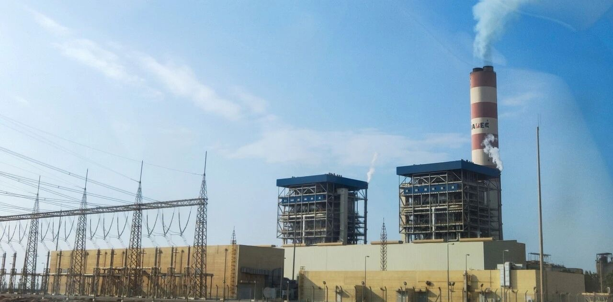
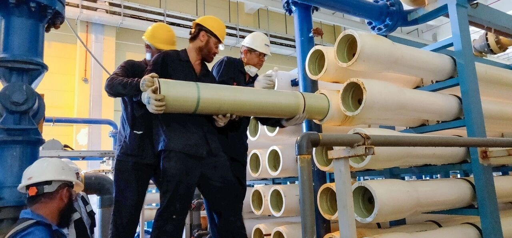
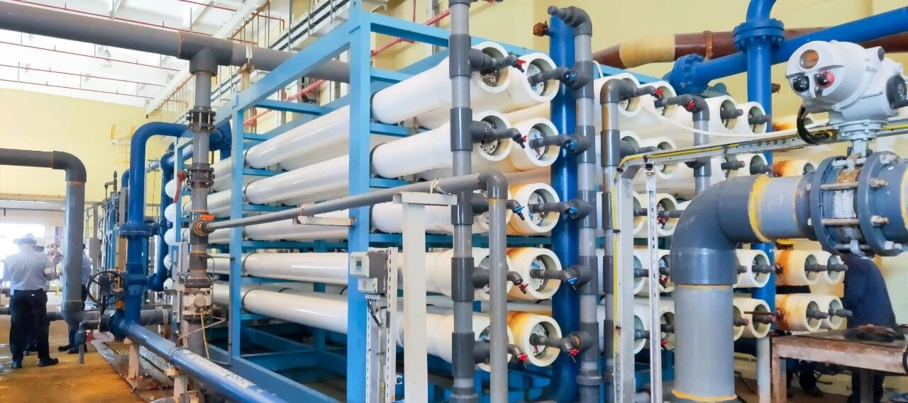

Sistemas RO industriales y de desalinización de agua de mar
Respuesta directa: Este sistema de ósmosis inversa para agua de mar fotografiado está configurado para un caudal nominal de agua producida de 2000 L/h. La lista de componentes que figura a continuación documenta la configuración suministrada; la idoneidad final y el rendimiento del proyecto requieren un análisis representativo del agua y una especificación operativa confirmada.
PN16 UPVC · DN40 manguera HP · DN40 UPVC válvula EV ×2 · DN32 SUS316L válvula HP EV ×1 · DN32 SUS316L válvula de cierre ×1
Depósito compartido para enjuague con agua dulce / CIP
200 L ×1 · compartido para enjuague con agua dulce / CIP
La capacidad es una designación nominal de la configuración, no una garantía de rendimiento en el lugar de instalación. Esta página no indica la tasa de recuperación, el rechazo de sales, el consumo energético, la salinidad del agua producida, la potencia total instalada, la superficie ocupada, el precio, el plazo de entrega ni la certificación.
Lingxiao, Runxin, Zhejiang BOTO, Sanjing, FLEXEM y Vontron identifican componentes documentados de esta configuración. Su mención no implica autorización ni respaldo.
SWRO
Secuencia del proceso de la configuración de 2000 L/h SWRO fotografiada
Ilustración del proceso. El caudal final y las condiciones de funcionamiento deben confirmarse a partir del análisis del agua y los requisitos del proyecto.
01Bomba de alimentación
02Filtro de arena de cuarzo
035 μm PP
041 μm PP + antiincrustante
05SWRO de alta presión
06Agua producida / concentrado
07Enjuague con agua dulce / CIP
La misma unidad fotografiada: lado de pretratamiento con filtro de arena 2465, depósito de dosificación y filtración de seguridad en dos etapas.PLC · VFD · CCT3320V
Control, instrumentación y protección frente a la presión
Ilustración del proceso. El caudal final y las condiciones de funcionamiento deben confirmarse a partir del análisis del agua y los requisitos del proyecto.
Control e instrumentaciónSUS304 · FLEXEM · PLC · MCB · KM · KA · LED · SA · flotador ×2 · CCT3320V ×1 · 20 GPM / 30 GPM
Supervisión de la presión y protección−0.5–3 bar ×1 · 1–10 MPa ×1 · SUS304 0–1 MPa ×2 · 0–10 MPa ×1
Tuberías y válvulasPN16 UPVC · DN40 manguera HP · DN40 UPVC válvula EV ×2 · DN32 SUS316L válvula HP EV ×1 · DN32 SUS316L válvula de cierre ×1
Sistemas RO industriales y de desalinización de agua de mar
La capacidad es una designación nominal de la configuración, no una garantía de rendimiento en el lugar de instalación. Esta página no indica la tasa de recuperación, el rechazo de sales, el consumo energético, la salinidad del agua producida, la potencia total instalada, la superficie ocupada, el precio, el plazo de entrega ni la certificación.
Ilustración del proceso. El caudal final y las condiciones de funcionamiento deben confirmarse a partir del análisis del agua y los requisitos del proyecto.
¿Se garantizan 2000 L/h para cualquier fuente de agua de mar?
No. Es la designación nominal de la configuración. Deben revisarse la composición química del agua de alimentación, las condiciones de captación, la temperatura, la calidad objetivo del agua producida y las condiciones de funcionamiento.
¿Qué componentes están fijados en la configuración documentada?
La página documenta la bomba compartida Lingxiao CMI8-35(T), el filtro de arena 2465, dos filtros de seguridad de 30 pulgadas, la dosificación MF101, la bomba de alta presión BOTO, cuatro elementos SW8040LE-400, los controles PLC y el depósito de 200 L para enjuague/CIP.
¿Qué se debe enviar antes de elaborar la cotización?
Envíe un análisis representativo del agua, los detalles de captación, la calidad requerida del agua producida, el horario de funcionamiento, la alimentación eléctrica, la distribución del emplazamiento y las condiciones de descarga del concentrado.
Solicite una cotización técnica para el sistema de 2000 L/h SWRO
Envíe el informe del agua de alimentación, la calidad requerida del agua producida, el horario de funcionamiento, la confirmación del suministro eléctrico de 380 V / 50 Hz / 3 fases, la distribución del emplazamiento, el drenaje y las condiciones de descarga del concentrado.
Aplicación industrial de SWRO · datos comunicados por el proyecto
Caso de ósmosis inversa de agua de mar en una central eléctrica del mar Rojo
Resumen del caso. Una central eléctrica de Oriente Medio utiliza agua del mar Rojo como fuente para una línea de desalación que suministra agua de aporte a las calderas. La documentación del proyecto facilitada para este caso describe una planta con dos unidades generadoras de 660 MW y cuatro sistemas de ósmosis inversa de agua de mar (SWRO) de una sola etapa.
36.020 mg/LTDS de alimentación (mg/L)
81,2 m³/hCaudal de permeado (m³/h)
43,1%Recuperación (%)
99,36%Rechazo de sales (%)
Calidad del agua de alimentación y tratamiento
La descripción del proyecto indica agua de mar con unos 36.000 mg/L de sólidos disueltos totales (TDS) y concentraciones elevadas de calcio y magnesio. El análisis iónico independiente suma 41.169,51 mg/L. El caso publicado por VONTRON indica un TDS del agua de origen de hasta 41.170,14 mg/L, cifra coherente con esa suma dentro del redondeo. Por separado, la tabla operativa de los cuatro sistemas registra un TDS de alimentación del sistema de 35.790–36.020 mg/L. Son puntos de agua o registros distintos y no deben combinarse sin confirmar fechas de muestreo y base de medición.
Configuración del sistema comunicada
Cada línea se describe como un sistema de una sola etapa con una disposición de membranas de 20 × 7, un caudal de permeado de diseño de al menos 80 m³/h y una recuperación especificada de al menos el 43 %. El tren de tratamiento comunicado incluye coagulación y sedimentación, filtración multimedia, carbón activado, depósito y bomba de alimentación, filtración de seguridad con cartuchos, bomba de alta presión, etapa SWRO, depósito de permeado, una segunda etapa de ósmosis inversa, intercambio iónico y suministro de agua de aporte a calderas.
Cambio de elementos y referencia del proyecto
La información del proyecto confirmada por el cliente identifica los elementos instalados en la línea 1 desde 2019 como VONTRON SW8040HR-400. El caso publicado por VONTRON sobre una central eléctrica en Arabia Saudí confirma cuatro trenes de desalación, cada uno con 140 elementos SW8040HR-400, y su puesta en servicio en 2019. Este caso es distinto de la configuración de 2.000 L/h de esta página, que incluye cuatro elementos SW8040LE-400.
Tren de tratamiento comunicado
Captación de agua del mar Rojo → Coagulación y sedimentación → Filtración multimedia → Carbón activado → Depósito y bomba de alimentación → Filtración de seguridad con cartuchos → Bomba de alta presión → SWRO de una etapa con elementos SW8040HR-400 → Depósito de permeado → Segunda etapa de ósmosis inversa → Intercambio iónico → Agua de aporte a calderas
Resultados operativos comunicados
La tabla comparativa facilitada registra una lectura puntual del Sistema 1 a 31,1 °C: caudal de alimentación de 188,2 m³/h, caudal de permeado de 81,2 m³/h, recuperación del 43,1 %, TDS de alimentación de 36.020 mg/L, TDS del permeado de 228,8 mg/L, TDS del concentrado de 64.340 mg/L y rechazo de sales del 99,36 %. El texto del proyecto comunica por separado un rechazo inicial del 99,3 % y una producción un 10 % superior al valor de diseño. Son contextos de medición distintos y deben mantenerse separados.
Consultar los datos operativos comunicados de los cuatro sistemas
Lectura operativa facilitada por el proyecto. Los valores se han transcrito de la tabla comparativa facilitada y no se han verificado de forma independiente.
Sistema
Temperatura (°C)
Presión de alimentación (MPa)
Presión del concentrado (MPa)
Pérdida de presión (MPa)
Caudal de alimentación (m³/h)
Caudal de permeado (m³/h)
Recuperación (%)
TDS de alimentación (mg/L)
TDS del permeado (mg/L)
TDS del concentrado (mg/L)
Rechazo de sales (%)
Proveedor indicado en la fuente
1
31,1
6,155
6,034
0,121
188,2
81,2
43,1
36.020
228,8
64.340
99,36
VONTRON
2
31,3
6,094
5,826
0,268
182,1
75,72
41,6
35.890
273,3
62.000
99,24
Marca A
3
31,4
6,123
5,962
0,161
174,7
69,75
39,9
35.810
349,6
57.340
99,02
Marca B
4
30,9
6,250
6,064
0,186
184,1
79,0
42,9
35.790
841,6
62.340
97,65
Marca A
Consultar el análisis iónico independiente del agua de alimentación
Análisis iónico independiente facilitado por el proyecto. La suma es 41.169,51 mg/L, próxima al límite de TDS de agua de origen de 41.170,14 mg/L publicado por VONTRON; la tabla operativa de los cuatro sistemas registra 35.790–36.020 mg/L en la alimentación del sistema. Mantenga separados estos registros hasta confirmar puntos de muestreo, fechas y base analítica.
Componente
Concentración indicada (mg/L)
Calcio (Ca²⁺)
436,69
Magnesio (Mg²⁺)
1.432,36
Sodio (Na⁺)
12.878,02
Potasio (K⁺)
362,36
Bario (Ba²⁺)
0,00
Estroncio (Sr²⁺)
0,00
Boro (B)
6,80
Bicarbonato (HCO₃⁻)
144,04
Carbonato (CO₃²⁻)
7,53
Sulfato (SO₄²⁻)
3.311,58
Cloruro (Cl⁻)
22.588,58
Fluoruro (F⁻)
1,26
Nitrato (NO₃⁻)
0,00
Sílice (SiO₂)
0,29
Resultado publicado y periodo operativo comunicado por el cliente
VONTRON informa en su caso publicado de un rechazo de sales del sistema del 99,36 % y señala que la producción y el rendimiento de desalación cumplieron los valores de diseño y se mantuvieron estables durante la operación. Los registros facilitados por el cliente indican por separado cerca de 2.000 m³ de agua de mar desalados al día y estabilidad del caudal de permeado y del rechazo de sales durante más de dos años del periodo documentado. Es una declaración histórica y no afirma que el sistema funcione actualmente.

Fotografía contextual de una central incluida en las imágenes facilitadas para el caso; el cliente confirmó el permiso de publicación.

Fotografía de instalación de membranas facilitada para el caso; el cliente confirmó el permiso de publicación. La imagen no se utiliza para inferir el modelo exacto del elemento.

Batería industrial de recipientes de presión de ósmosis inversa mostrada en las fotografías del proyecto facilitadas por el cliente; publicación autorizada. La imagen es contextual y no se presenta como prueba de que corresponda exactamente a esa planta.
Key project identity, manufacturer/model, commissioning year, design criteria and 99.36% system desalination figure are cross-referenced against VONTRON's published power-plant project case. Detailed four-train operating rows, ion analysis, initial 99.3%, 10% above-design output, daily volume and >2-year duration come from customer-provided material; those detailed records were not independently audited by Yuchen Water. The customer confirmed publication permission on 2026-10-23.